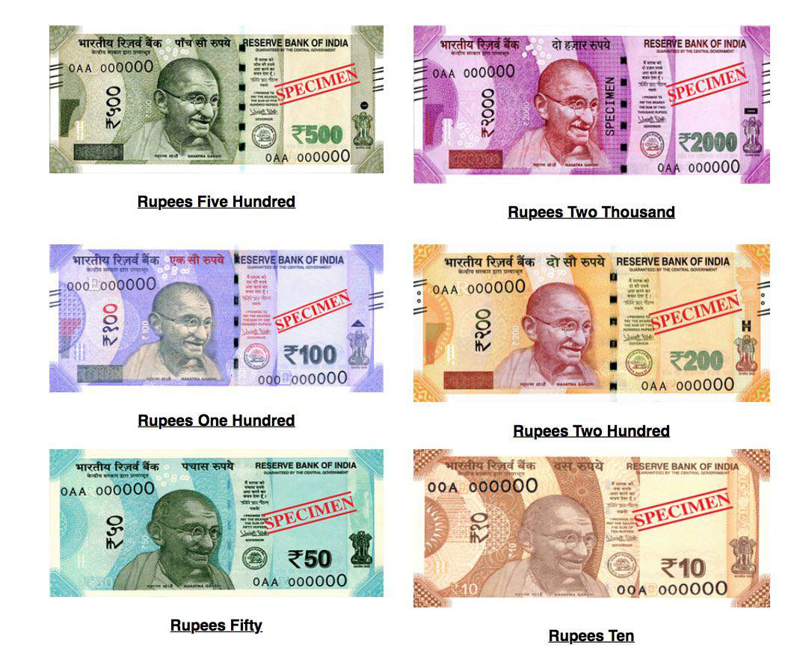
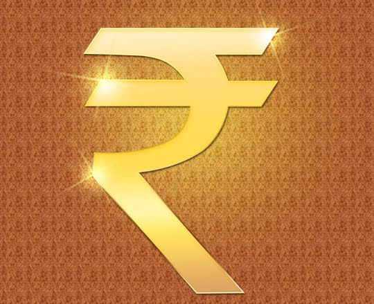

CURRENCY

The Indian rupee (symbol ?; code: INR) is the official currency in the Republic of India. The rupee is subdivided into 100 paise (Hindi pl; singular: paisa). The issuance of the currency is controlled by the Reserve Bank of India. The Reserve Bank manages currency in India and derives its role in currency management on the basis of the Reserve Bank of India Act, 1934.
The history of the Indian rupee traces back to ancient India in circa 6th century BCE: ancient India was one of the earliest issuers of coins in the world,along with the Chinese wen and Lydian staters.
Arthashastra, written by Chanakya, prime minister to the first Maurya emperor Chandragupta Maurya (c. 340–290 BCE), mentions silver coins as rupyarupa, other types including gold coins (suvar?arupa), copper coins (tamrarupa) and lead coins (sisarupa) are mentioned.
Rupa means 'form' or 'shape'; for example, in the word rupyarupa: rupya 'wrought silver' and rupa 'form'.

